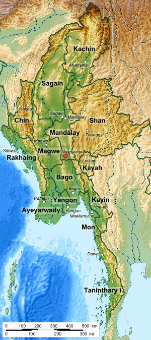

Divisions and States |
||
|
Naypyidaw
Naypyidaw Union Territory also spelled Nay Pyi Taw is an administrative division in central Myanmar.It contains Naypyidaw, the capital city of Myanmar. Yangon Yangon Region formerly Rangoon Division is an administrative region of Myanmar. Located in the heart of Lower Myanmar, the division is bordered by Bago Region to the north and east, the Gulf of Martaban to the south, and Ayeyarwady Region to the west. Yangon Region is dominated by its capital city of Yangon, the former national capital and the largest city in the country. Mandalay Mandalay Region is an administrative division of Myanmar. It is located in the center of the country, bordering Sagaing Region and Magway Region to the west, Shan State to the east, and Bago Region and Kayin State to the south. The regional capital is Mandalay. To the south of the region lies the national capital of Nay Pyi Taw. |
 |
More information |
||